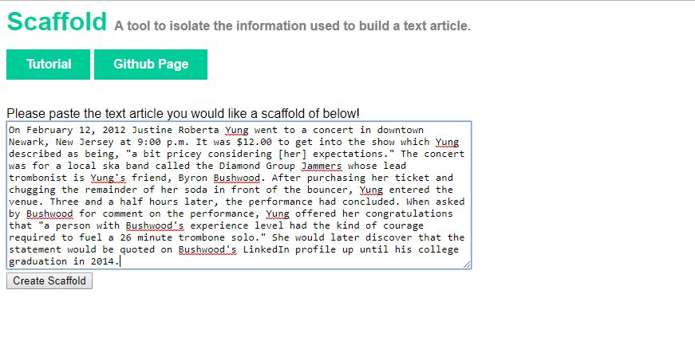
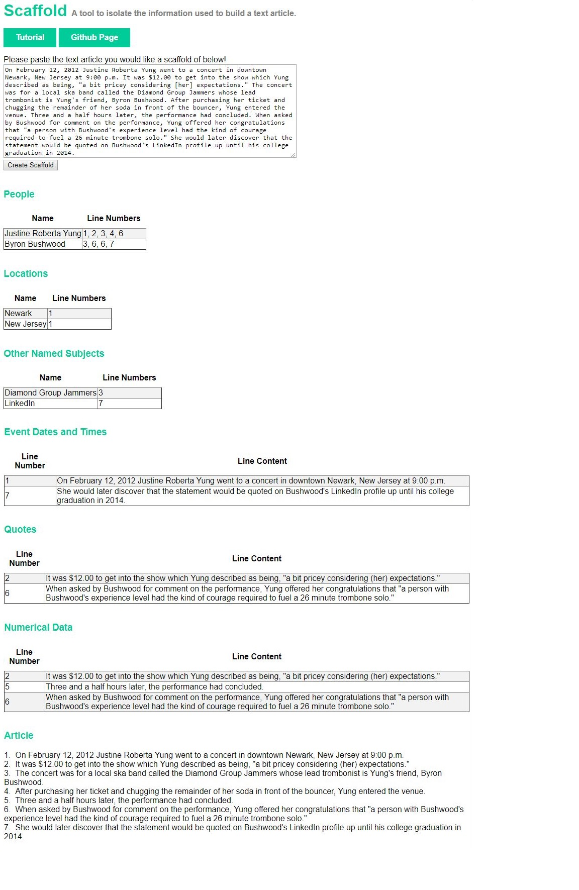

Scaffold is a tool to quickly see the subjects and primary content found in a text article. It is intended to aid users looking to consume text articles containing specific topics and/or content-types. In addition, it can be used by individuals needing to extract pieces of information (quotes, event dates and times, and numerical data) from text articles to incorporate them into papers or presentations. Instead of having to hunt back through an entire text body to find a piece of data, the data itself and its location in the article can be easily found in its corresponding table. The following tutorial will outline how to use Scaffold and clarify what the Scaffold categories created by an input article mean. Before we begin, some disclaimers and comments: -Always bear in mind that regardless of how many quotes, statistics, or other pieces of information an article contains, it doesn't mean that the viewpoint being represented by that article is necessarily valid. Data of any kind can be faked, misrepresented, or otherwise unreliable. -Scaffold is not meant to substitute actually reading an article. It can save the time of people who don't want to read articles that won't cover their target subject sufficiently, but if you create a Scaffold of an article and decide that it appears valuable to you, please read the whole thing. -Scaffold is an ongoing experiment made for fun by an ongoing experimenter. If your results contain errors or miscategorizations or are otherwise confusing, my apologies. Hopefully over time that will happen less as I work on making Scaffold smarter.
As of this version of Scaffold, the input method is to copy and paste the text content intended to be analyzed into the text box on the homepage as shown below.
Now click the "Create Scaffold" button to view your results! Below is the results page for our sample text.
Here's some background on the results for each category: People - The subjects in this category are proper nouns used to refer to people, including titles if applicable. To be clear, this is only intended to capture the names of people when they are used in reference to a person and not when a person's name is used to refer to another place/thing that shares their name. For example, An article involving George Washington should include the name as a result under People. An article involving the George Washington Bridge should include the name as a result under either Places or Other Named Subjects, depending on its usage. Locations - This is a mixture of geo-political entities (like countries and states) as well as other proper nouns referring to subjects that act as setting in an article. If a company name is used with the intention of referring to their offices, for instance, it is intended to end up here. Ex: "The engineers gave a presentation at Google HQ to explain their bug fix." Other Named Subjects - This is a catch-all category for named entities that aren't places or people. Organizations, titles of media, and holidays are some examples of these. Event Date/Times - This category is intended to list out statements containing any combination of specifically stated weekdays, months, years, or times. This doesn't include statements that contain time phrases like "three years ago" without also giving an exact year or other time reference (ex: 1976, 10:00 p.m., March 3, Last January) Quotations - If there is a phrase or statement in quotation marks, it is included here, presented in the context of the line it is located in. Numerical Data - This category houses statements made containing numbers, whether in the form of digits or written out, that aren't referncing dates or times.
If you want to make a new Scaffold, you can use the text box at the top of the results page, click "Create Scaffold", and view the results for the new article. Bear in mind though that this will wipe out the current Scaffold being displayed. That's all! Thanks for reading and I hope you enjoy checking out Scaffold!